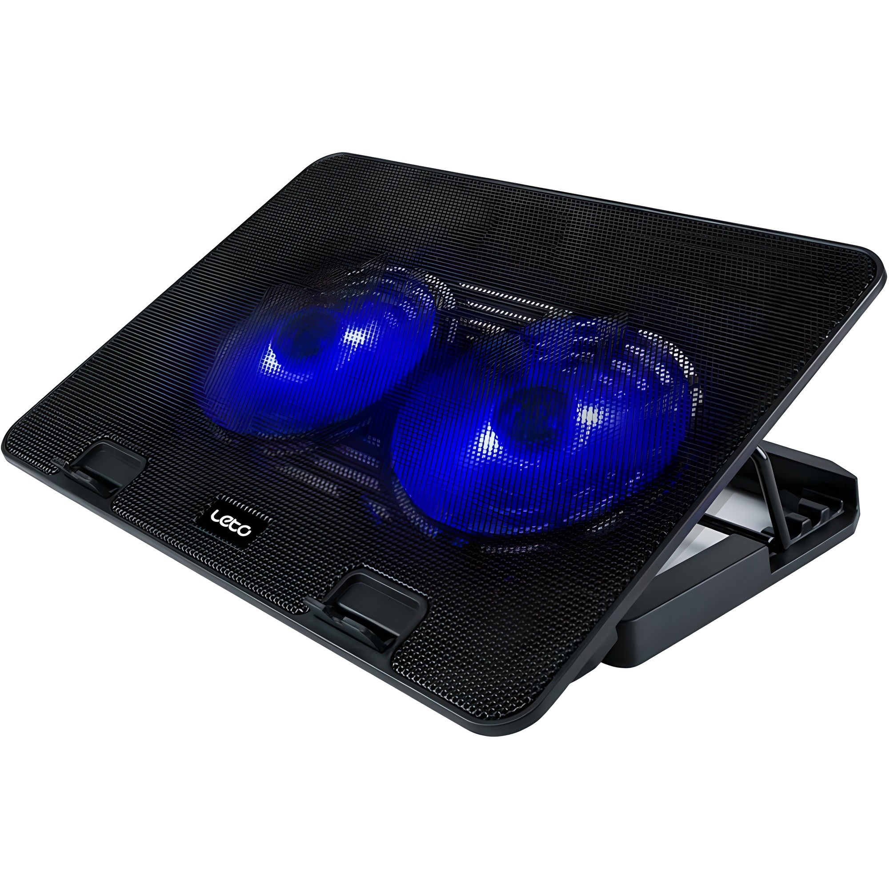
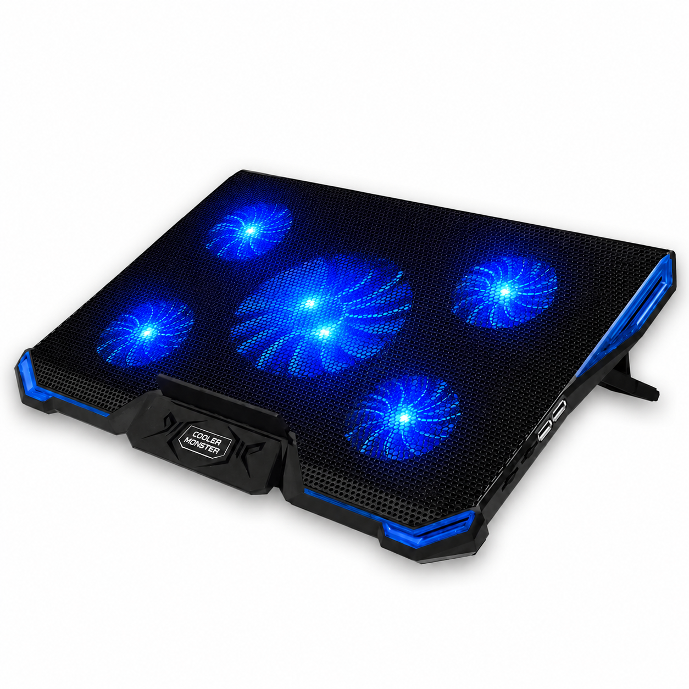
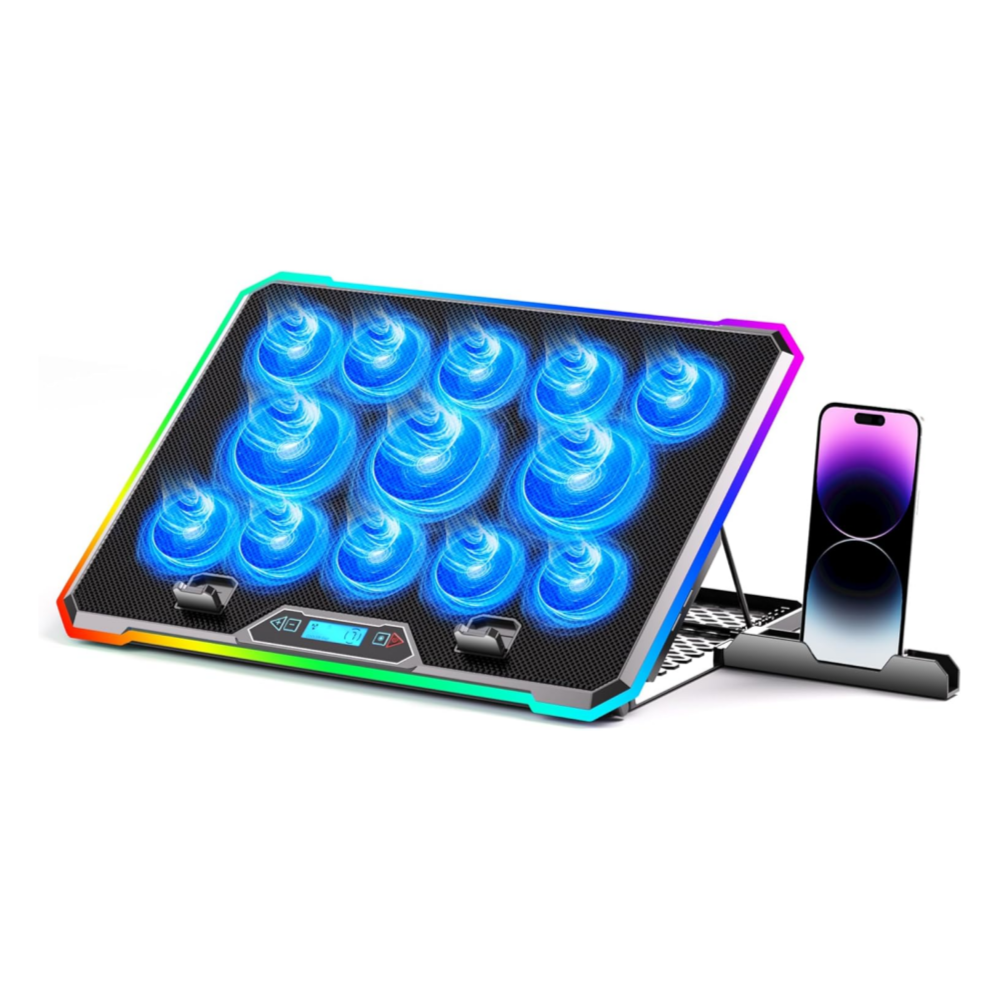

홈 › 제품리뷰 › 디지털/IT
노트북 쿨러, 조용한 가성비냐 강력 게이밍이냐
작성: 생활서식 모음 · 2026-07-21
파트너스 활동의 일환으로 일정액의 수수료를 지급받습니다
🛒 오늘의 쿠팡 특가 보러가기 →
노트북 쿨러, 여름에 노트북 뜨거워지면 하나 갖고 싶죠?
핵심은 "풍량과 소음, 거치 각도" 3대 를
"사무용 조용하게" "게이밍 강력 쿨링" "자세·거치까지"용도별 정답 까지 담았으니
📋 목차
노트북 쿨러, 조용한 가성비냐 강력 게이밍이냐 — 결론 먼저 스펙 비교표: 한눈에 보기 노트북 쿨러 고를 때 봐야 할 4가지 사무냐 게이밍이냐, 뭘 사야 할까? 자주 묻는 질문 (FAQ) 결론: 한 줄 요약
노트북 쿨러, 조용한 가성비냐 강력 게이밍이냐 — 결론 먼저
노트북 쿨러는 "풍량과 소음" 으로 갈려요.노벨뷰 게이밍 쿨러 처럼 강력한 쿨링이 무난합니다. 사무용으로 조용히 살짝만 식히면 가성비 듀얼팬, 자세·거치까지 챙기면 거치대형입니다.
1 사무·조용 (가성비 초이스)
가성비

1만원대 듀얼팬 거치
1. 레토 메탈 듀얼쿨러 노트북 거치대
1만원대 듀얼팬 메탈 거치대 겸용 조용히 살짝 쿨링
강력하진 않아도
추천 대상
사무·웹서핑 등 가벼운 발열의 노트북 조용한 쿨링과 거치를 함께 원하는 분 저렴하게 마련할 분 장점
1만원대로 듀얼팬 쿨러+거치대를 함께 마련 메탈 소재라 방열·내구에 유리 거치 각도로 타이핑 자세·화면 높이 개선 단점
이 제품은 사무·가벼운 발열용 입니다. 고사양 게임 고발열이면 2번 게이밍, 자세·거치 완성도면 3번으로 가세요. "조용히 살짝"이면 가성비 최고예요.
한줄 리뷰
"사무용 노트북이 미지근하게 더운" 정도면 듀얼팬으로 충분합니다. 거치대 겸용이라 자세도 좋아져요. 고사양 게임 발열이면 2번을 보세요.
주요 스펙
제품: 레토 메탈 듀얼쿨러 노트북 거치대 (LCS-S01) 구성: 듀얼팬 + 메탈 거치대 용도: 사무·가벼운 발열 배송: 로켓배송 가격: 약 13,800원 (변동 가능) ※ 실제 스펙·가격과 차이가 있을 수 있습니다
2 게이밍·고발열 (베스트 초이스)
베스트

게이밍 강력 쿨링
2. 노벨뷰 게이밍 노트북 쿨러 거치대
강력한 다중팬 쿨링 게이밍 고발열 대응 거치 각도 조절
고사양 게임 고발열을 잡는
추천 대상
고사양 게임으로 노트북이 뜨거워지는 분 강력한 풍량 쿨링이 필요한 분 거치 각도까지 조절하려는 분 장점
다중팬 강력 쿨링으로 게이밍 고발열을 낮추는 데 도움 거치 각도 조절로 타이핑·화면 높이 개선 게이밍 노트북의 발열 완화에 유리 단점
풍량이 강한 만큼 저가 대비 팬 소음이 있을 수 있음 사무·조용함이면 1번, 자세·완성도면 3번입니다. 2번은 "강력 쿨링" 의 실속 구간 — 게이밍 고발열에 가장 무난합니다.
한줄 리뷰
"게임하면 노트북이 불덩이"인 분에게 강력 쿨러가 체감이 큽니다. 각도 조절도 되고요. 조용한 사무용이면 1번, 자세·완성도면 3번을 보세요.
주요 스펙
제품: 노벨뷰 게이밍 노트북 쿨러 거치대 구성: 다중팬 강력 쿨링 · 각도 조절 용도: 게이밍·고발열 배송: 로켓배송 가격: 약 25,410원 (변동 가능) ※ 실제 스펙·가격과 차이가 있을 수 있습니다
3 자세·완성도 (프리미엄)
프리미엄

거치·완성도
3. 에스앤코 게이밍 쿨러 노트북 거치대
쿨링 + 거치 완성도 안정적 각도·높이 게이밍 감성 마감
쿨링과 자세·완성도를 함께
추천 대상
쿨링과 거치 자세를 모두 챙기려는 분 안정적 각도·높이 조절을 원하는 분 완성도·마감을 중시하는 분 장점
강력 쿨링과 함께 안정적인 거치 각도·높이 제공 완성도 있는 마감으로 데스크 세팅이 깔끔 게이밍 노트북 발열·자세를 함께 개선 단점
사무·조용함이면 1번, 강력 쿨링 실속이면 2번이 합리적입니다. 3번은 쿨링+자세·완성도 를 모두 원하는 분에게 값어치가 있습니다.
한줄 리뷰
"쿨링도, 목·손목 자세도 제대로"면 거치 완성도가 좋은 이 구간이 만족스럽습니다. 세팅도 깔끔해요. 가성비면 1·2번이 합리적입니다.
주요 스펙
제품: 에스앤코 게이밍 쿨러 노트북 거치대 구성: 강력 쿨링 + 거치 각도·높이 강점: 완성도 · 자세 배송: 로켓배송 가격: 약 36,190원 (변동 가능) ※ 실제 스펙·가격과 차이가 있을 수 있습니다
스펙 비교표: 한눈에 보기
가격·풍량·무게 중 본인에게 중요한 기준부터 보세요. "최고" 표시는 3제품 중 객관적 1위 값입니다.
← 좌우로 스크롤 →
노트북 쿨러 고를 때 봐야 할 4가지
풍량·소음만 맞춰도 "체감 없거나 시끄러운" 실패를 막습니다.
1) 풍량 — 발열 정도에 맞게
사무·웹서핑: 가벼운 발열이라 듀얼팬이면 충분게이밍·영상편집: 고발열이라 강력한 다중팬 필요팬 크기·개수·회전수(풍량)를 확인 2) 소음 — 조용한 환경
풍량이 강할수록 팬 소음이 커지는 편 사무실·도서관이면 저소음·풍량 조절 확인 소음 관련 실사용 후기를 함께 보기 3) 거치 각도·높이 — 자세
각도가 서면 타이핑이 편하고 화면 높이가 올라가 목 부담 감소 높이조절이 되면 외장 키보드·모니터와 조합에 유리 거치대 겸용이면 쿨링+자세를 한 번에 4) 크기·전원 — 호환
내 노트북 크기(인치)가 거치판에 맞는지 확인 전원은 대부분 USB — 포트를 하나 차지 미끄럼 방지·발열 배출 구조도 함께 사무냐 게이밍이냐, 뭘 사야 할까?
발열 정도와 소음 민감도만 정하면 답이 나옵니다.
사무·조용: 1번 레토 듀얼쿨러 → 1만원대게이밍·고발열: 2번 노벨뷰 게이밍 → 강력 쿨링자세·완성도: 3번 에스앤코 → 쿨링+거치자주 묻는 질문 (FAQ)
Q1. 노트북 쿨러가 정말 온도를 낮춰주나요? 어느 정도 도움이 됩니다. 노트북 아래로 바람을 넣어 바닥과 흡기구의 열을 식혀 온도를 낮추는 데 도움을 줍니다. 특히 노트북을 책상에 딱 붙여 쓰면 흡기가 막혀 발열이 심해지는데, 쿨러가 공간을 띄우고 바람을 넣어 개선됩니다. 다만 내부 발열 자체를 없애는 것은 아니므로, 고사양 작업은 풍량이 강한 제품이 체감이 큽니다.
Q2. 팬이 강하면 시끄럽지 않나요? 풍량이 강할수록 소음도 커지는 경향이 있습니다. 강력한 쿨링을 위해 팬 회전수가 높아지면 바람 소리가 납니다. 사무실·조용한 공간에서 쓴다면 풍량 조절이 되거나 저소음을 강조한 제품이 좋습니다. 반대로 게이밍처럼 이미 팬 소음이 큰 환경이면 강한 쿨러의 소음은 상대적으로 덜 신경 쓰입니다.
Q3. 거치대 겸용 쿨러가 좋은 이유가 뭔가요? 쿨링과 자세를 한 번에 챙길 수 있기 때문입니다. 노트북을 평평하게 두면 화면이 낮아 목이 숙여지고 타이핑 자세도 불편한데, 각도가 서는 거치대 겸용 쿨러는 화면을 높이고 타이핑 각도를 편하게 만들어줍니다. 발열을 식히면서 목·손목 부담도 줄이므로, 오래 쓰는 분에게 특히 유용합니다. 외장 키보드와 함께 쓰면 자세 개선 효과가 더 큽니다.
Q4. 노트북 쿨러는 어떻게 전원을 공급하나요? 대부분 USB로 전원을 공급합니다. 노트북의 USB 포트에 연결하면 팬이 돌아가는 방식이라 별도 어댑터가 필요 없습니다. 다만 USB 포트를 하나 차지하므로, 포트가 부족하면 USB 허브와 함께 쓰거나 포트가 여유 있는지 확인하세요. 일부 제품은 추가 USB 포트를 제공해 차지한 포트를 보완해주기도 합니다.
Q5. 노트북 발열이 심하면 쿨러만으로 충분한가요? 쿨러는 보조 수단이고 근본 관리도 함께 해야 합니다. 쿨러로 바닥 발열을 낮추는 것과 함께, 노트북 내부 먼지 청소, 발열이 심한 작업 줄이기, 통풍이 되는 환경에서 사용 등이 병행되면 좋습니다. 발열이 비정상적으로 심하거나 갑자기 뜨거워졌다면 내부 팬·써멀 문제일 수 있으므로 점검을 받는 것이 좋습니다.
결론: 한 줄 요약
1) 레토 듀얼쿨러 — 약 13,800원 / 사무·조용. 1만원대 듀얼팬+거치.2) 노벨뷰 게이밍 쿨러 — 약 25,410원 / 게이밍·고발열. 강력 다중팬 쿨링.3) 에스앤코 쿨러 거치대 — 약 36,190원 / 자세·완성도. 쿨링+거치 각도.이 포스팅은 쿠팡 파트너스 활동의 일환으로, 이에 따른 일정액의 수수료를 제공받습니다.